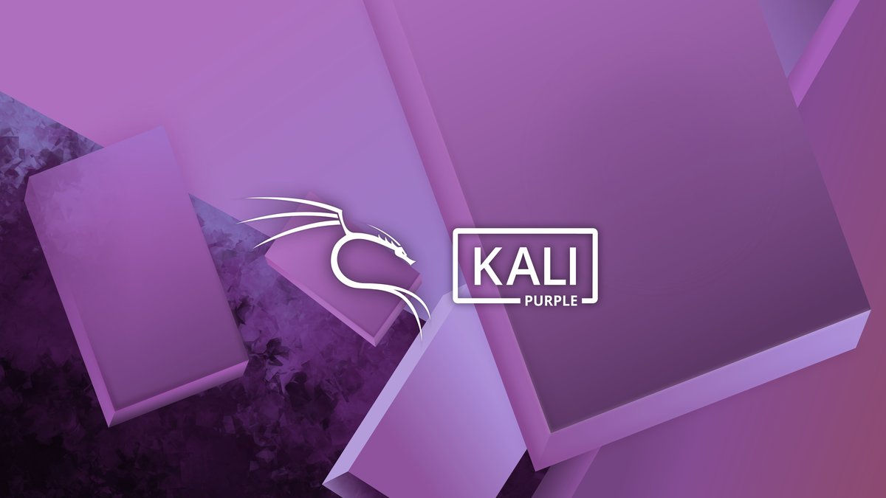

/* defer: JavaScript dosyasının HTML belgesi tamamen yüklendikten sonra
çalıştırılmasını sağlar. */
İlk Web Sitem

Bu site, MDN'nin "Your first website" dersini takip ederek hazırlandı. Üç
teknoloji birlikte çalışıyor:
- HTML: sayfanın iskeleti
- CSS: sayfanın görünümü
- JavaScript: sayfanın davranışı
Daha fazlası için resmi kaynak:
MDN Web Docs